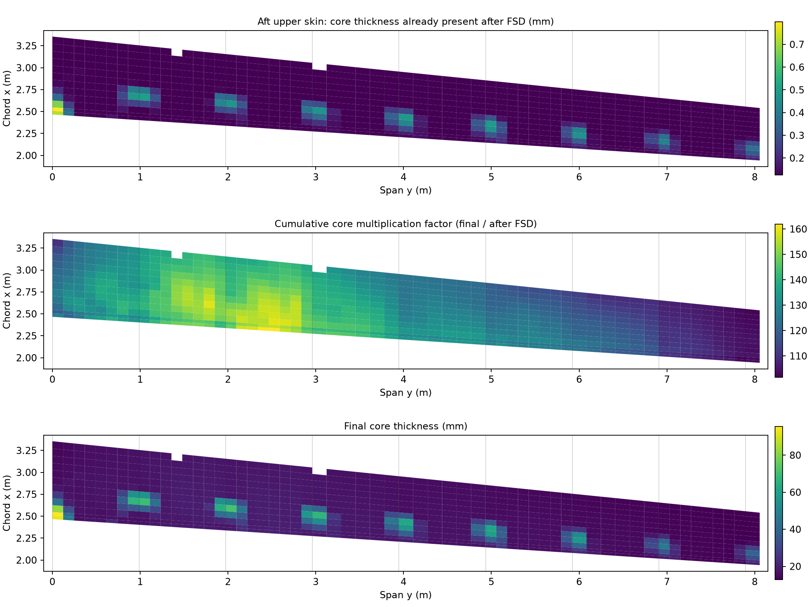
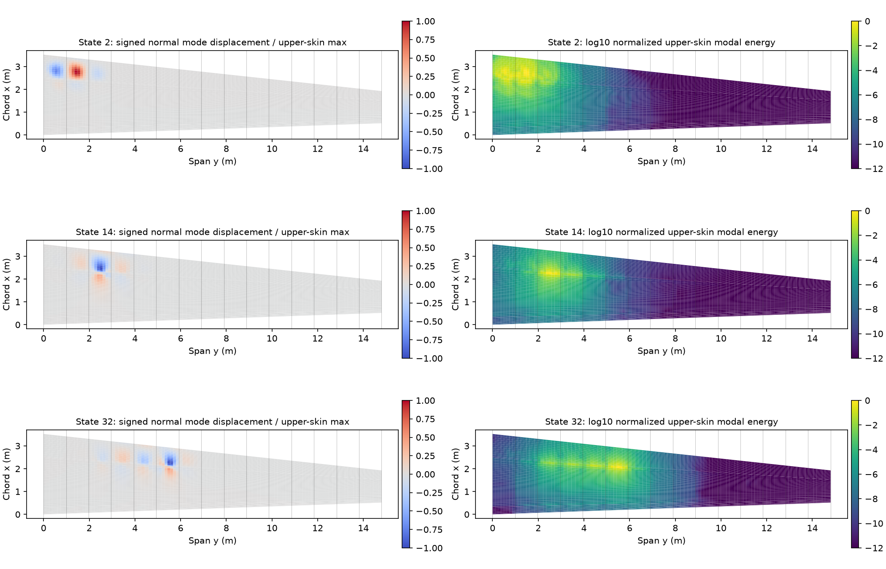
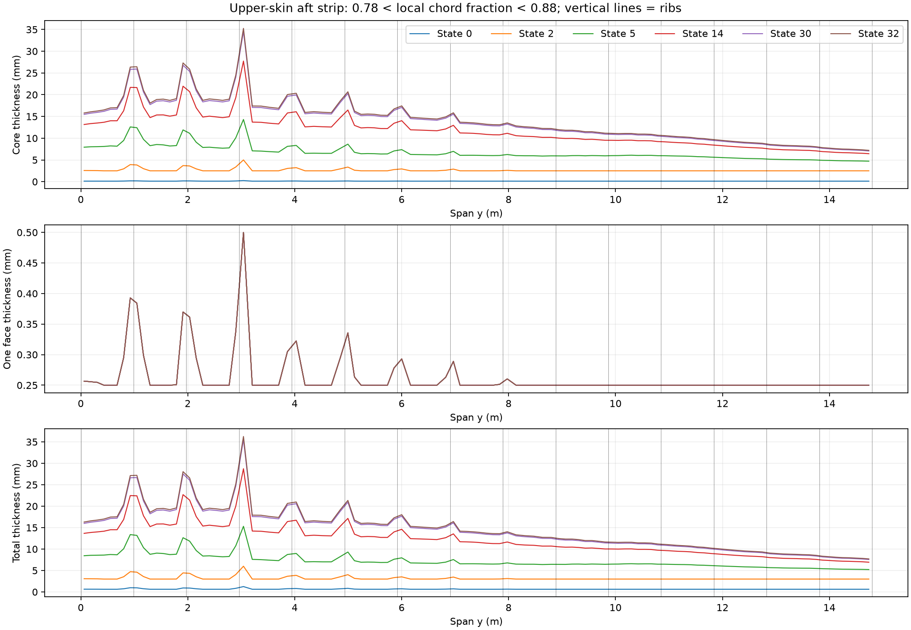

19 November 2026. The 16-rib reference wing, Figure 16 of review12. No new ANSYS analyses and no changes to the manuscript or reviewer response documents.
Read all 33 buckling-stage fields.npz files, their history, geometry and saved first-mode displacement exports at states 2, 14 and 32. Replayed all 32 thickness transitions with the archived grow function, using saved stress, energy, buckling factor and restoration flags. Every face and core thickness matched exactly (maximum absolute difference 0 m). This is algebraic postprocessing, not an equilibrium or buckling solve. Archived mode text was read directly through gzip without restoring or modifying originals.

Vertical lines mark rib planes. Element polygons show the actual saved discretization. Diagnostic crop: y < 8 m, 0.70 < chord fraction < 0.95. Each row has its own units and color scale.
The aft thickness peaks follow rib stations; they cannot be interpreted as a direct map of final-mode antinodes. The maximum upper-skin normal displacement of the first mode moves from span 1.418 m at state 2 to 2.528 m at state 14 and 5.488 m at state 32. Mode signs and magnitudes are arbitrary; plots normalize each selected mode to its upper-skin maximum. Energy maxima and displacement antinodes are different quantities. The final energy field is not the full history that generated thickness.


The rib-spaced patches are inherited from stress sizing and amplified by elementwise multiplicative core reinforcement. Stress filtering does not regularize the reinforcement field. The audit explains the saved discrete pattern and verifies consistency with the implemented rule. It does not establish mesh independence, an optimum reinforcement distribution, physical necessity of each patch or manufacturing feasibility.
The saved rib-end stress-refinement study holds thickness fixed and cannot demonstrate mesh independence of these sizing patterns. The radius study changes the stress filter on a fixed mesh and likewise does not provide such proof. A future pattern-convergence study would repeat complete sizing on changed meshes with consistent load transfer and compare fields at fixed physical locations. A manufacturing-oriented design would additionally need admissible zones, transition limits or an explicit thickness regularization followed by reanalysis. None was performed here.
Recommended response: explain the filtering boundary and inherited-pattern mechanism, show initial core / multiplier / final core evidence, and explicitly retain mesh-dependence and manufacturing limitations. No new solver analysis is needed to support this qualified explanation.
Reproduction: audit.py. Detailed values and transition records: audit.json. Other figures: thickness decomposition, energy and subsequent increments.